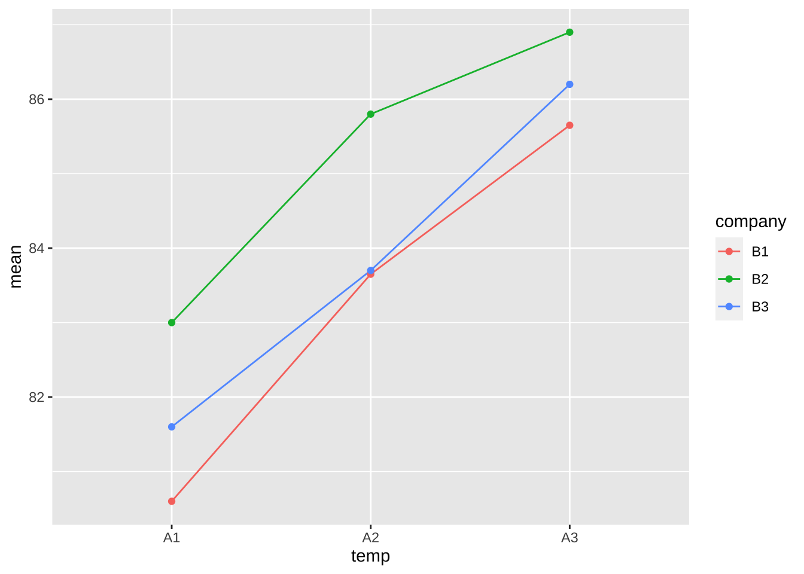
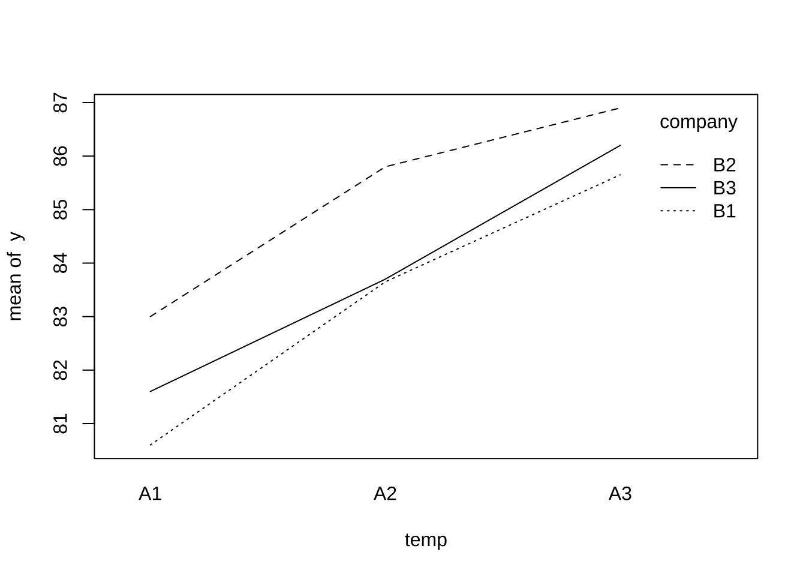
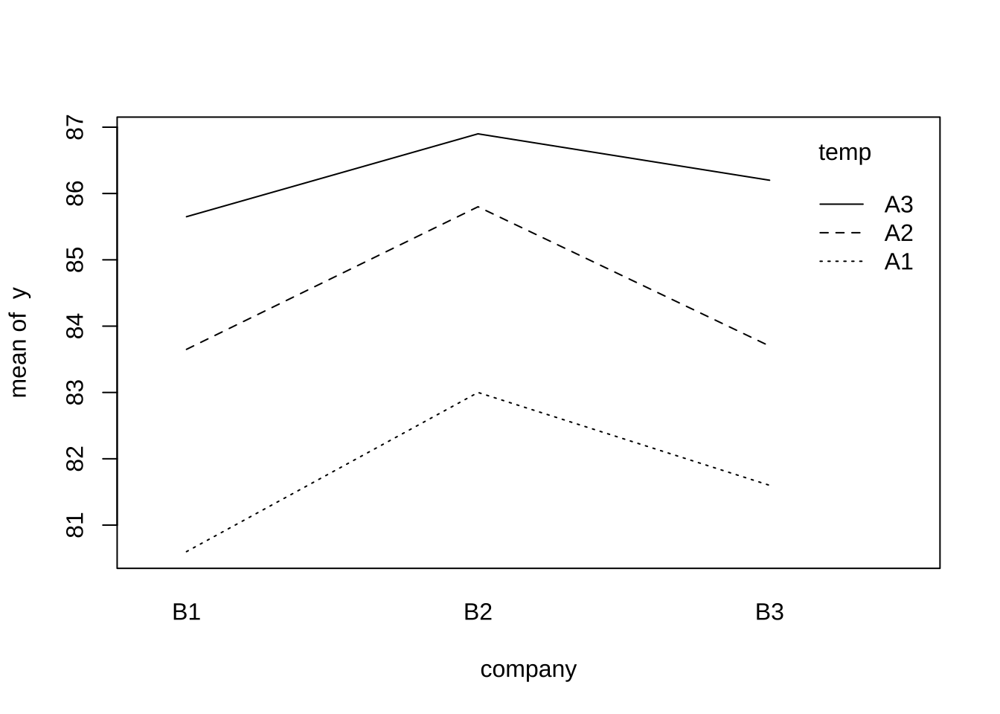

제 3 장 처리 조합의 블럭
3.1 실험 계획: 교재 분할법 I - 예제 5.3 - 화학약품의 생성률
이 실험에서는 화학약품의 생성률에 영향을 미치는 두 요인을 고려한 실험이다.
- 반응온도(
temp, \(\alpha\)) 3개의 수준 - 중간원료 제조회사 (
company, \(\beta\)) 3개의 수준
이 실험에서는 9개의 처리를 먼저 랜덤하게 선택하고 선택된 처리 하에서 실험을 2번 반복하였다.
따라서 처리의 조합이 블럭효과(block, \(\rho\))로 나타난다.
\[ x_{ijk} = \mu + \alpha_i + \beta_j + \rho_{ij} + e_{2(ijk)} \]
위의 모형식에서 상호작용 효과 \((\alpha \beta)_{ij}\) 와 1차 랜덤화에 의한 오차 \(e_{1(ij)}\) 는 교락되어 블럭효과 \(\rho_{ij}\)에 합쳐저서 나타난다.
\[ \rho_{ij} = e_{1(ij)} + (\alpha \beta)_{ij} \]
이러한 경우 블럭효과 \(\rho_{ij}\)는 임의효과가 된다.
\[\begin{equation} \rho_{ij} \sim N(0, \sigma_1^2), \quad e_{2(ijk)} \sim N(0, \sigma_2^2) \tag{3.1} \end{equation}\]
3.2 자료의 구성
이제 실험자료를 입력하여 데이터프레임으로 만들어 보자
temp<- as.factor(rep(c("A1","A2", "A3"), each=2, times=3))
company<- as.factor(rep(c("B1", "B2", "B3"), each=6))
y <-c( 81.0, 80.2, 84.1, 83.2, 85.2, 86.1,
83.3, 82.7, 86.2, 85.4, 86.6, 87.2,
81.3, 81.9, 83.2, 84.2, 86.0, 86.4)
df<- data.frame(temp, company, y)
df## temp company y
## 1 A1 B1 81.0
## 2 A1 B1 80.2
## 3 A2 B1 84.1
## 4 A2 B1 83.2
## 5 A3 B1 85.2
## 6 A3 B1 86.1
## 7 A1 B2 83.3
## 8 A1 B2 82.7
## 9 A2 B2 86.2
## 10 A2 B2 85.4
## 11 A3 B2 86.6
## 12 A3 B2 87.2
## 13 A1 B3 81.3
## 14 A1 B3 81.9
## 15 A2 B3 83.2
## 16 A2 B3 84.2
## 17 A3 B3 86.0
## 18 A3 B3 86.43.3 시각적 분석
일단 각 처리에 대한 관측값의 평균을 구해보자.
dfsum <- df %>% group_by(temp, company) %>% summarise(mean=mean(y), sd=sd(y))## `summarise()` has grouped output by 'temp'. You can override using the `.groups` argument.dfsum## # A tibble: 9 x 4
## # Groups: temp [3]
## temp company mean sd
## <fct> <fct> <dbl> <dbl>
## 1 A1 B1 80.6 0.566
## 2 A1 B2 83 0.424
## 3 A1 B3 81.6 0.424
## 4 A2 B1 83.6 0.636
## 5 A2 B2 85.8 0.566
## 6 A2 B3 83.7 0.707
## 7 A3 B1 85.6 0.636
## 8 A3 B2 86.9 0.424
## 9 A3 B3 86.2 0.283이제 처리의 평균값을 가지고 온도에 따른 변화를 살펴보자. 이 경우 제조회사 원료에 대해서는 색깔을 다르게 하여 상호작용 효과도 볼 수 있다.
아래 상호작용 그림을 보면 온도에 따라서 화학약품의 생성률이 크게 변하는 것을 알 수 있다. 유의한 상호작용은 관측되지 않는다.
dfsum %>%
ggplot(aes(x = temp , y = mean, color=company)) +
geom_line(aes(group = company)) + geom_point()
함수 interaction.plot()은상호작용 그림을 평균값을 계산하지 않고 원래 자료를 이용하여 다음과 같이 그릴 수 있다.
with(df, interaction.plot(x.factor = temp, trace.factor = company, response = y))
with() 은 이용하고자 하는 변수가 있는 데이터프레임을 지정하는데사용한다.
함수 with()의 첫 번쨰 인자는 앞의 예제와 같이 df 와 같은 데이터 프레임을 지정한다.
두 번째 인자에는 함수를 이용한 명령문을 넣어준다. 앞의 프로그램에서 함수 interaction.plot()
안에서 사용된 변수들( temp,company,y)들은 데이터프레임 df에 있는 변수들이다.
이제 제조회사에 따른 변화를 살펴보자. 제조회사에 따른 생성률의 변화는 크지 않다.
with(df, interaction.plot(x.factor = company, trace.factor =temp , response = y))
3.4 분산분석
이제 분산분석을 하여 처리의 효과에 대한 검정을 해보자. 실험에서 각 처리의 조합을 블럭으로 해주어야 한다.
다음 anova 함수에서 두 처리의 조합을 temp:company 로 표시한다. 사실 temp:company는 두 처리
temp와 company의 상호작용(interaction)을 의미한다. 다음으로 처리의 조합 temp:company 이
임의효과라는 것을 Error(temp:company)와 같이 지정해 준다.
model<- aov(y ~ temp + company + Error(temp:company), data=df)## Warning in aov(y ~ temp + company + Error(temp:company), data = df): Error()
## model is singularsummary(model)##
## Error: temp:company
## Df Sum Sq Mean Sq F value Pr(>F)
## temp 2 61.8 30.91 85.7 0.00052 ***
## company 2 12.0 5.98 16.6 0.01157 *
## Residuals 4 1.4 0.36
## ---
## Signif. codes: 0 '***' 0.001 '**' 0.01 '*' 0.05 '.' 0.1 ' ' 1
##
## Error: Within
## Df Sum Sq Mean Sq F value Pr(>F)
## Residuals 9 2.57 0.286위의 분산분석표에서 온도의 효과를 검정하는 F-통계량의 값은 85.7211 이고 p-값은 5.1982^{-4}이다. 따라서 5% 유의수준으로 귀무가설을 기각하며 온도에 따라서 생성률이 매우 유의하게 다르다.
온도의 효과를 검정하는 F-통계량의 값은 16.5917 이고 p-값은 0.0116이다. 따라서 5% 유의수준으로 귀무가설을 기각하며 원료 제조회사에 따라서도 생성률이 유의하게 다르다.
3.5 블럭을 고려하지 않는 경우
만약에 처리 조합으로 생긴 블럭효과를 고려하지 않으면 어떤 일이 일어날까?
만약 생성률 실험자료를 완전 랜덤화 이원배치법에 의하여 얻은 자료라고 생각한다면 반복이 있으므로 상호작용 효과를 추론할 수 있다. 따라서 상호작용 효과를 고정효과로 놓고 분산분석을 적용할 것이다.
\[\begin{equation} \rho_{ij} = (\alpha \beta)_{ij} : \text{ fixed effect }, \quad e_{2(ijk)} \sim N(0, \sigma_2^2) \tag{3.2} \end{equation}\]
아래 프로그램은 상호작용 효과를 고정효과로 생각한 것이다.
model2<- aov(y ~ temp + company + temp:company, data=df)
summary(model2)## Df Sum Sq Mean Sq F value Pr(>F)
## temp 2 61.8 30.91 108.24 5.1e-07 ***
## company 2 12.0 5.98 20.95 0.00041 ***
## temp:company 4 1.4 0.36 1.26 0.35267
## Residuals 9 2.6 0.29
## ---
## Signif. codes: 0 '***' 0.001 '**' 0.01 '*' 0.05 '.' 0.1 ' ' 1분산분석의 결과는 위와 같으며 온도와 제조회사에 대한 F-검정 통계량을 보면 임의효과 모형에서 나온 것보다 크다. 이는 F-검정 통계량을 만들 때 분모에 사용된 평균 오차제곱합 \(MS_E\)와 자유도가 달라서 나타나는 현상이다. 또한 자유도도
두 모형에서 온도에 대한 F-검정의 차이를 보자.
| 모형 | anova 항 |
\(MS_A\) | \(MS_E\) | \(F_0\) |
|---|---|---|---|---|
| 임의효과 모형 [식 (3.1)] | Error(temp:company) |
30.9072 | 0.3606 | 85.7211 |
| 고정효과 모형 [식 (3.2)] | temp:company |
30.9072 | 0.2856 | 108.2354 |
위의 표에서와 같이 실험계획에 따라서 나누어 주는 평균 오차제곱합 \(MS_E\)와 자유도가 다르기 때문에 검정의 결과가 다르게 나타난다.
실험계획에서 통계적 추론을 하는 경우 자료의 구조는 같아도 실험의 방법(랜덤화의 방법)이 다르면 가설검정의 방법이 다르다.
따라서 실험의 방법에 따른 적절한 통계적 추론 방법을 선택하는 것이 중요하다.3.6 혼합모형
처리들의 조합을 임의효과로 보는 모형 (3.1) 을 lmer로 적합시키는 프로그램은 다음과 같다.
분산분석 결과는 anova() 에서 임의효과 Error(temp:company)를 사용하는 결과와 동일하다.
fit <- lmer(y ~ temp + company + (1 | temp:company ), data = df)
summary(fit)## Linear mixed model fit by REML. t-tests use Satterthwaite's method [
## lmerModLmerTest]
## Formula: y ~ temp + company + (1 | temp:company)
## Data: df
##
## REML criterion at convergence: 29.4
##
## Scaled residuals:
## Min 1Q Median 3Q Max
## -1.5203 -0.4673 -0.0711 0.7760 1.2014
##
## Random effects:
## Groups Name Variance Std.Dev.
## temp:company (Intercept) 0.0375 0.194
## Residual 0.2856 0.534
## Number of obs: 18, groups: temp:company, 9
##
## Fixed effects:
## Estimate Std. Error df t value Pr(>|t|)
## (Intercept) 80.911 0.316 4.000 255.67 1.4e-09 ***
## tempA2 2.650 0.347 4.000 7.64 0.0016 **
## tempA3 4.517 0.347 4.000 13.03 0.0002 ***
## companyB2 1.933 0.347 4.000 5.58 0.0051 **
## companyB3 0.533 0.347 4.000 1.54 0.1988
## ---
## Signif. codes: 0 '***' 0.001 '**' 0.01 '*' 0.05 '.' 0.1 ' ' 1
##
## Correlation of Fixed Effects:
## (Intr) tempA2 tempA3 cmpnB2
## tempA2 -0.548
## tempA3 -0.548 0.500
## companyB2 -0.548 0.000 0.000
## companyB3 -0.548 0.000 0.000 0.500anova(fit)## Type III Analysis of Variance Table with Satterthwaite's method
## Sum Sq Mean Sq NumDF DenDF F value Pr(>F)
## temp 49.0 24.48 2 4 85.7 0.00052 ***
## company 9.5 4.74 2 4 16.6 0.01157 *
## ---
## Signif. codes: 0 '***' 0.001 '**' 0.01 '*' 0.05 '.' 0.1 ' ' 1